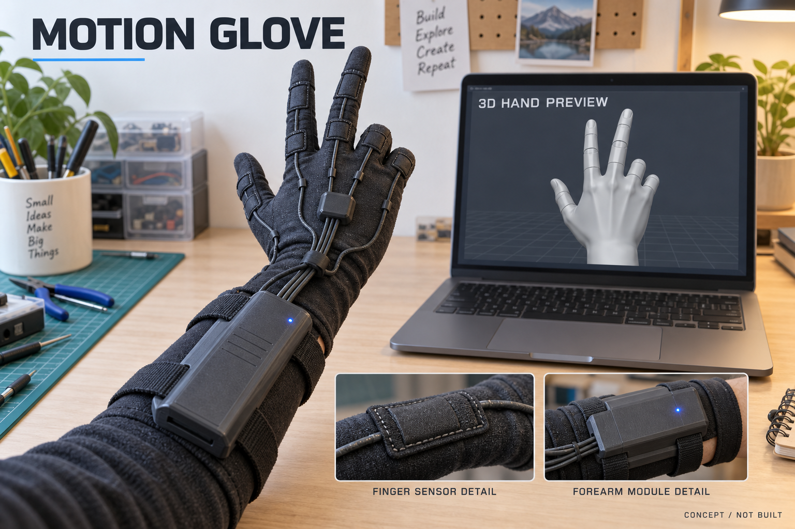
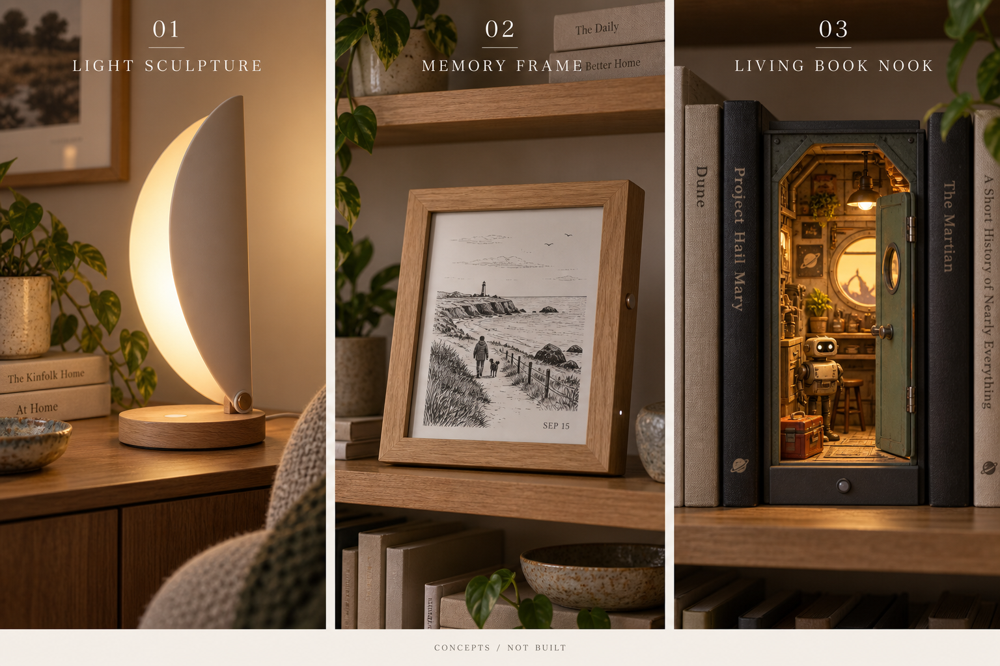
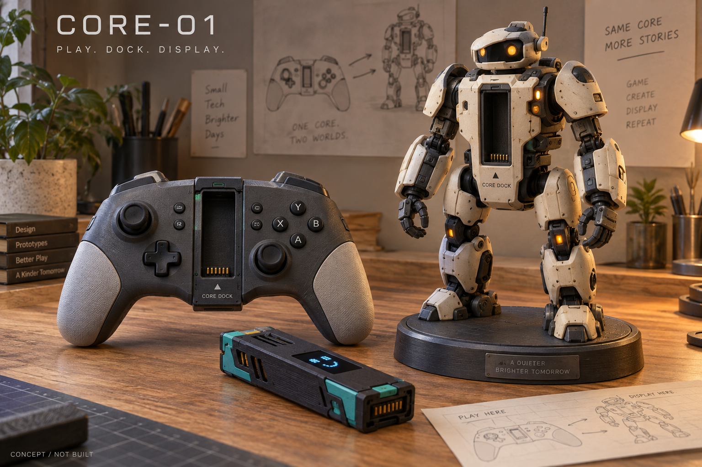
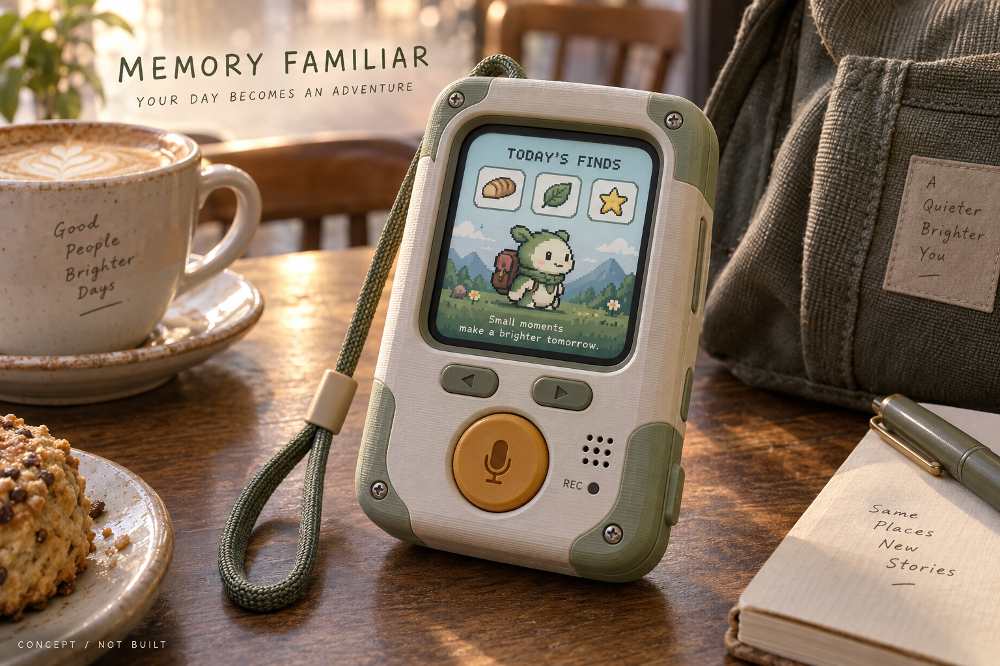
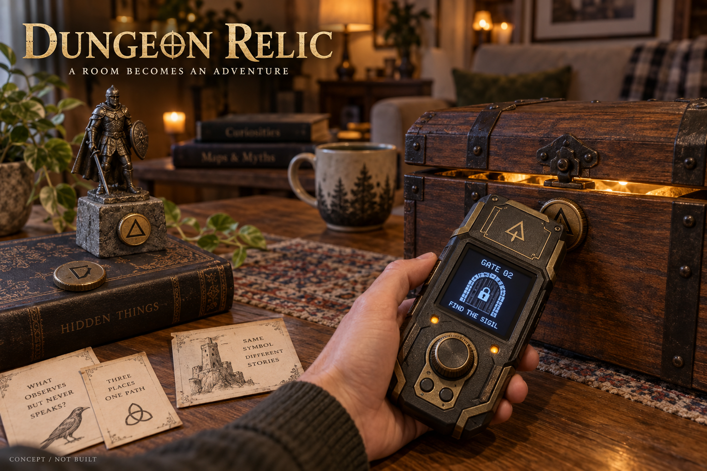
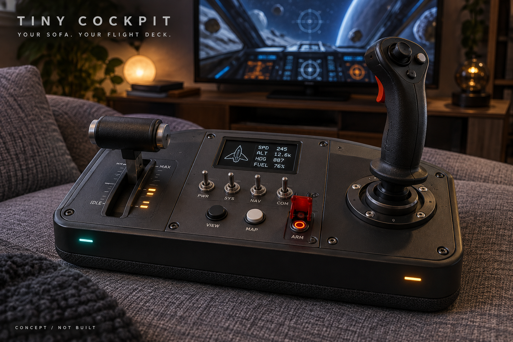
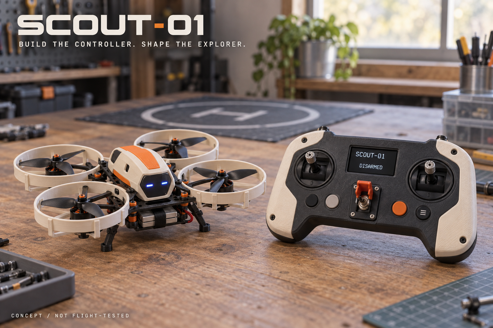

NEW · Motion Glove
내 손의 움직임을 화면으로
관절 센서와 팔뚝 모듈의 예상도. 센서 고정과 보정, 실제 관절 재현 정확도는 검증 대상입니다.
모션 장갑과 인테리어 전자 소품부터 게임, 기록, 탐험, 비행까지 사용 장면을 시각화했습니다. 모든 이미지는 AI로 생성한 제작 전 콘셉트입니다. 외형·치수·화면·기구·전기 및 비행 성능은 검증되지 않았습니다. 이미지를 누르면 원본이 열립니다.

관절 센서와 팔뚝 모듈의 예상도. 센서 고정과 보정, 실제 관절 재현 정확도는 검증 대상입니다.

왼쪽부터 빛 조형 조명·기억 액자·살아 있는 북눅. 각각 조명, 기록, 미니어처의 재미를 중심으로 검토했습니다.

전자 코어를 게임패드와 피규어 외장 사이에서 옮겨 쓰는 구상. 피규어의 관절·표정·조명 범위는 제작 시 조정합니다.

짧은 음성 기록을 PC에서 정리하고, 캐릭터의 아이템과 모험 일지로 표현합니다. 화면은 예시입니다.

태그를 읽고 다이얼·센서를 조작해 퍼즐을 풉니다. 상자와 피규어는 이야기의 소품입니다.

스틱·스로틀·토글 스위치를 가진 게임 컨트롤러. 화면의 게임 데이터 표시는 별도 게임 연동이 필요합니다.

NU-54V DK 조종기와 별도 비행 제어기를 가진 기체의 구상. 실제 드론 연결에는 기체별 통신 경로가 필요하며, PC 중계는 그림에서 생략했습니다.